Case 16 of 18 · The Found Odyssey
Episode 6 · THE KNOT
Can a hand hold something without the object floating beside it?
Episode 6, THE KNOT: Book 12, 7:05. Every scene is built on something held: an oar, wax, a cord, a spear, a cup, a knot.
How it was made
- Rebuild the hand in the renderer: palm first, then the object, then four fingers across the shaft, then the thumb.
- Separate poses for open hand, point, fist and flat palm, instead of one mitten.
- The near hand draws the object; the far hand draws its own end or nothing.
What this case teaches
- Draw order is the fix: the layering palm, object, fingers, thumb is what makes a grip read.
- Choosing a theme that stresses the weak point (every line carried by hands) tests the fix on every scene.
- Older episodes were not re-rendered. The notes say so, so the change is traceable.
How it differs. Episode 5 governed colour. Episode 6 governs the grip.
First sheet and last sheet
Where the stage started and where it finished.


The sheets, step by step
Grouped by working session. Click any sheet to view it full size; use the arrow keys to move through them.
Step 1Test frames and line studyOct 19 08:07–08:25 · 14 sheets


Show 10 more from this step


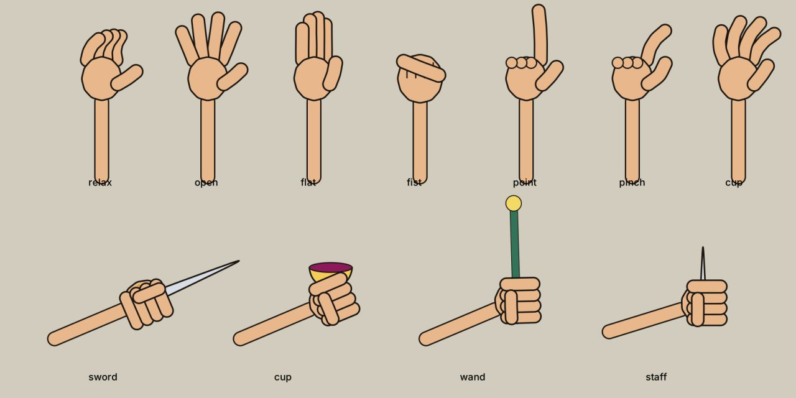
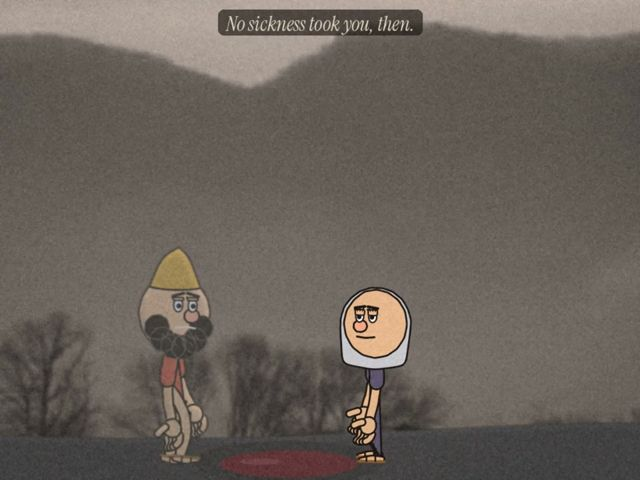

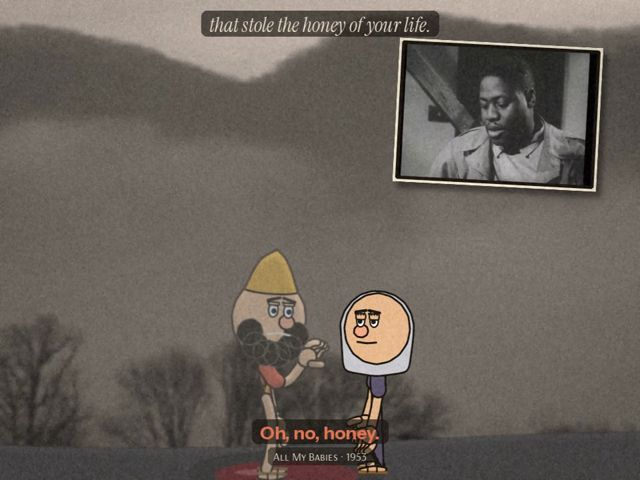
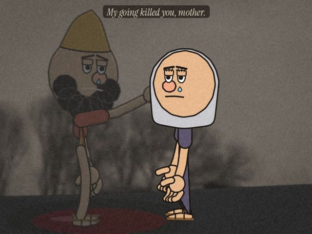
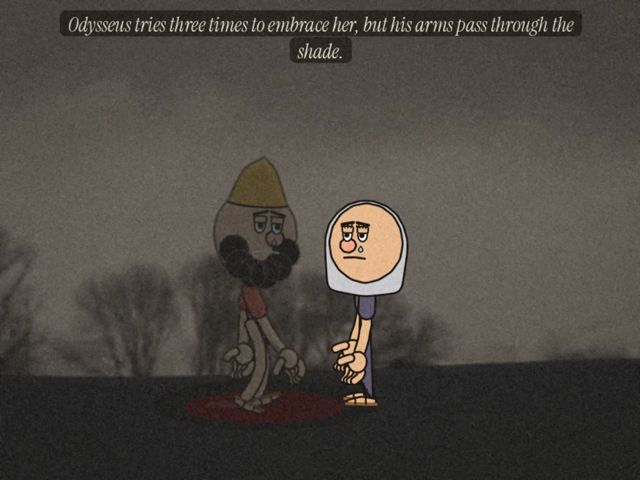
Step 2Scene test and test framesOct 19 08:25–09:09 · 14 sheets
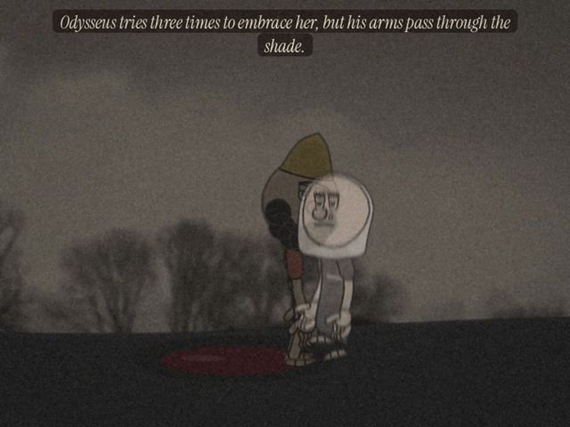


Show 10 more from this step


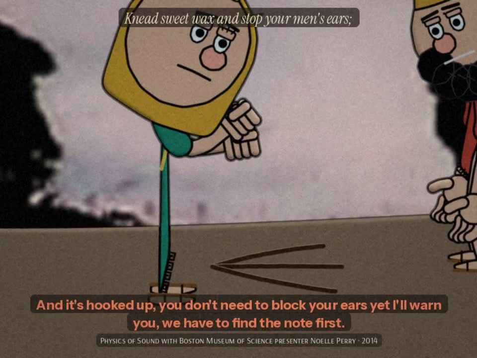
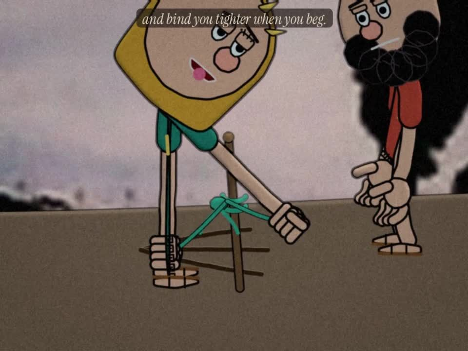
Step 3Test framesOct 19 09:22 · 1 sheet
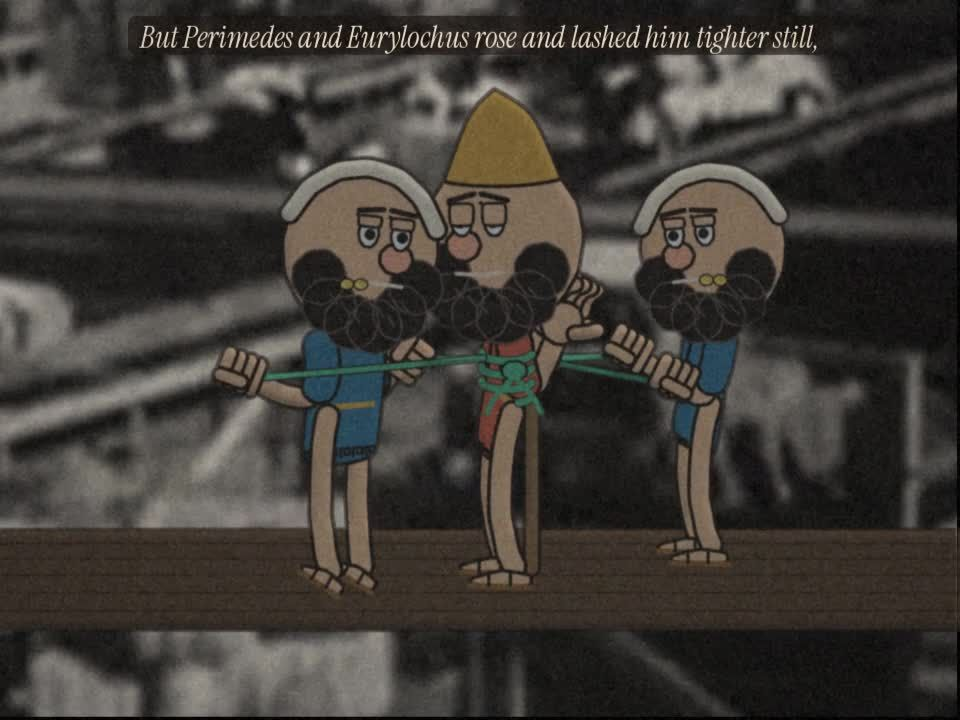
Step 4Test frames and episodeOct 19 10:36–11:12 · 5 sheets

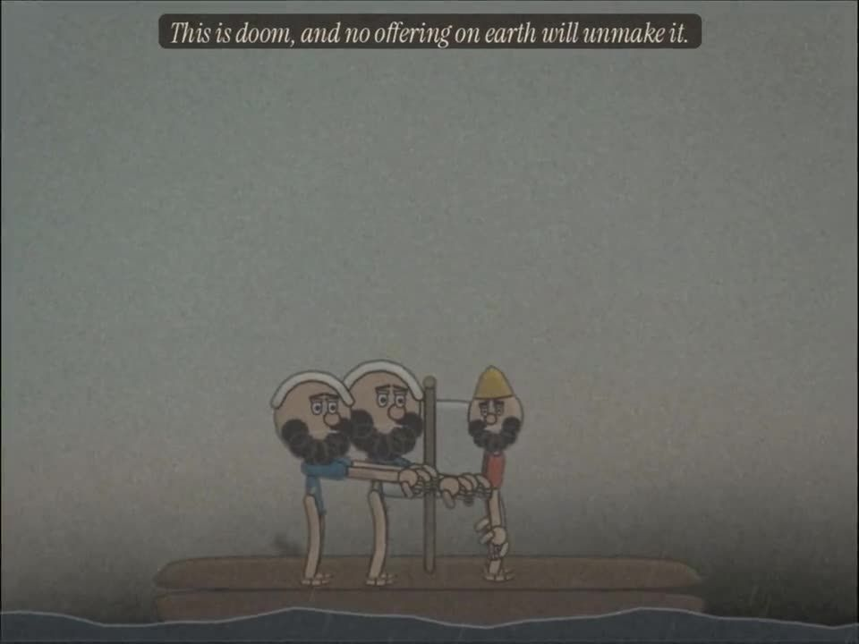
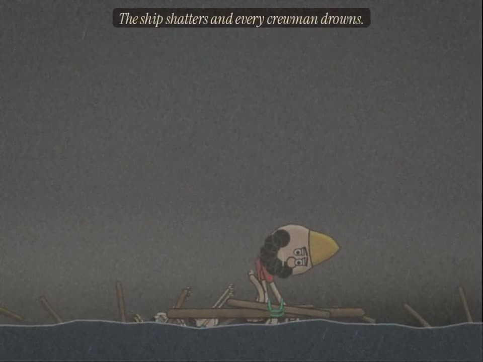
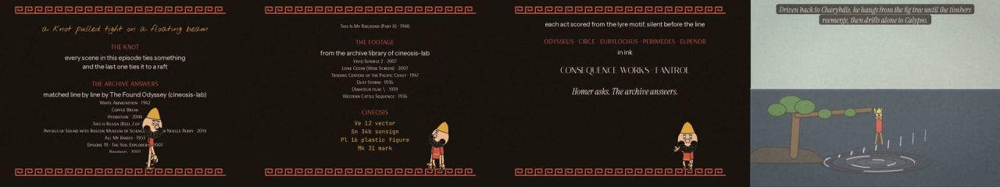
Show 1 more from this step
What came out of it


Read the record
Carried forward
The grip latch becomes a test in code that the next episode runs on screen.